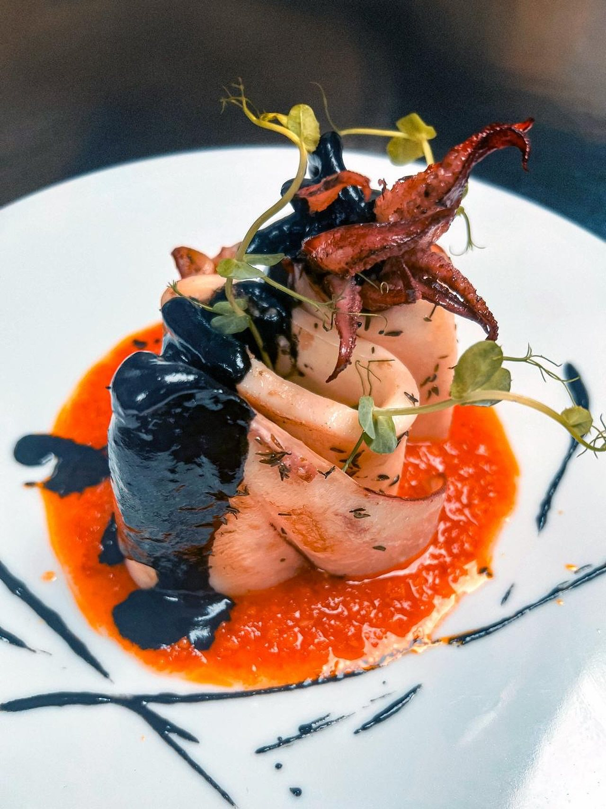

Pase 3 de 9
Granada
La Alpujarra y la cueva
El último reino de al-Ándalus y la sierra donde se refugió su gente. Granada se bebe con los ojos y se come de tapa en tapa, sin pedir.

Cocina de autor de La Taranta.
El plato
De visita por la Alpujarra de Granada
Chorizo ibérico, patata, huevo y padrón: la tapa alpujarreña llevada al tartar.
La gastronomía de la Alpujarra granadina es muy diferente a otros platos de la provincia de Granada. En este caso, el chef ha querido representar esta propuesta para darla a conocer, siendo ésta una gran desconocida. Está compuesto por tartar de chorizo ibérico, espuma de patata, huevo, panceta ibérica y pimientos de padrón.
Así lo cuenta la sala
Tartar de chorizo ibérico, espuma de patata, huevo, panceta ibérica y padrón.
Alérgenos huevo
La historia
El último reino
Granada fue la capital del último reino musulmán de la península y resistió dos siglos y medio más que el resto de al-Ándalus, hasta 1492. De esa demora vienen la Alhambra y el Generalife, y viene también la Alpujarra: las sierras donde se refugiaron los moriscos y donde quedaron sus pueblos encalados, su manera de cultivar y su comida.
Todo empezó en 1238 con Muhámmad I, el fundador de la dinastía nazarí, que eligió la colina de la Sabika para levantar lo que hoy es la Alhambra. Palacios, agua y yeserías que esta casa homenajea en sus arcos.
El arte
La zambra del Sacromonte
En las cuevas del Sacromonte, el barrio gitano de Granada, se baila la zambra: un género propio que recrea los momentos de una boda y que no existe igual en ninguna otra parte de Andalucía. Su nombre viene del árabe, y se suele vincular a los rituales nupciales moriscos del siglo XVI.
En 1922, Manuel de Falla y Federico García Lorca organizaron en Granada el Concurso de Cante Jondo, convencidos de que aquel arte antiguo merecía respeto y cuidado. Es uno de los momentos fundacionales del flamenco moderno.
Granada tiene también su propio cante de cabeza, la granaína.
El habla
Soplillos
Merengues de almendra de la Alpujarra, ligerísimos, cocidos en horno de leña. El nombre lo dice todo: pesan lo que un soplido.
«Anda, ponme un soplillo con el café».
La costumbre
La tapa que no se pide
CuándoTodo el año
Granada es de las pocas ciudades de España donde la tapa viene con la bebida y no se elige: llega lo que toque, y cambia con cada ronda. Comer de tapas allí es dejarse llevar, y discutir cuál es el mejor bar es deporte local.
Y de la Alpujarra viene el jamón de Trevélez, curado a casi 1.500 metros de altura, donde el aire frío y seco hace casi todo el trabajo.
Las ocho, de una sentá
Granada es el pase número 3 del menú degustación. El recorrido entero son las ocho provincias y un homenaje final que no pertenece a ninguna.